การใช้งานโมดูล LED Bar#
Keywords: Arduino, Nano, ESP32, LED Bar Module, WokWi Simulator
▷ โมดูล LED Bar#
บทความนี้นำเสนอตัวอย่างการใช้โมดูล 8-bit LED Bar ที่มีวงจร LED และตัวต้านทานจำกัดกระแส (มักใช้ตัวต้านทานแบบที่เรียกว่า R-Pack ที่มีขนาด เช่น 1kΩ หรือ 2kΩ เป็นต้น) โมดูลประเภทนี้ สามารถนำมาใช้เป็นอุปกรณ์เอาต์พุตเพื่อแสดงสถานะลอจิกได้ 8 บิต แบ่งจำแนกได้เป็น 2 ประเภท ตามรูปแบบการต่อวงจร
- Common-Anode: ขาแอโนด (A) ของหลอด LED ทุกดวง เชื่อมต่อถึงกัน เรียกว่า ขา COM (Anode) ซึ่งจะต้องต่อกับแรงดันไฟเลี้ยง VCC และที่ขาอินพุต D1-D8 ของโมดูล จะต้องป้อนสัญญาณดิจิทัลแบบ Active-Low (อินพุตเป็น '0' หรือ LOW จะทำให้ LED อยู่ในสถานะ ON)
- Common-Cathode ขาแคโทด (K) ของหลอด LED ทุกดวง เชื่อมต่อถึงกัน เรียกว่า ขา COM (Cathode) ซึ่งจะต้องต่อกับ GND และที่ขาอินพุต D1-D8 ของโมดูล จะต้องป้อนสัญญาณดิจิทัลแบบ Active-High (อินพุตเป็น '1' หรือ HIGH จะทำให้ LED อยู่ในสถานะ ON)
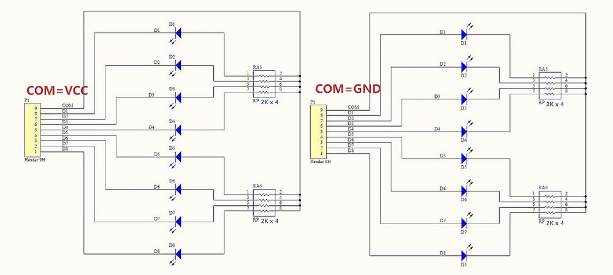
รูป: ผังวงจรของโมดูล (1) Common-Anode (ซ้ายมือ) และ (2) Common-Cathode (ขวามือ)
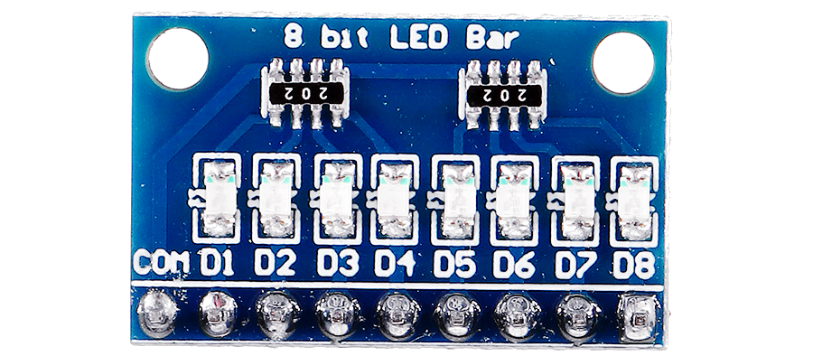
รูป: โมดูล 8-bit LED Bar
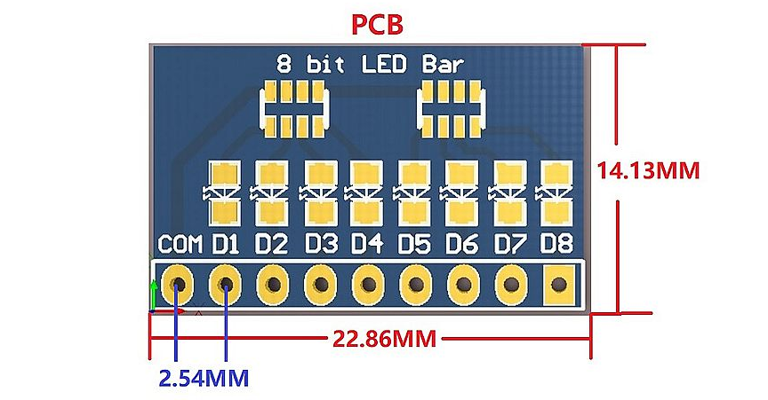
รูป: แสดงขนาดของโมดูลและตำแหน่งการวางชิ้นส่วนอิเล็กทรอนิกส์บนแผ่น PCB (มุมมอง Top View)
▷ การทดลองโดยใช้ Wokwi Simulator#
การทดลองเขียนโค้ด Arduino เพื่อใช้งานร่วมกับโมดูล LED Bar สามารถทำได้ง่าย โดยใช้ Wokwi Simulator (https://wokwi.com/projects/) และยังไม่จำเป็นต้องมีอุปกรณ์ฮาร์ดแวร์จริง
#if defined(ESP32)
// For ESP32 DevKit V1 board + 10-bit LED Bar (Wokwi Simulator):
// => use pins: {23,22,32,33,25,26,27,14,12,13}
// For WeMos Lolin32 Lite + 8-bit LED bar
// => use pins: {22,19,23,18,5,17,16,4}
const int LED_PINS[] = {23,22,32,33,25,26,27,14,12,13};
#else
// For Arduino Nano + 10-bit LED Bar (Wokwi Simulator)
// => use pins: {2,3,4,5,6,7,8,9,10,11}
// For Arduino Nano + 8-bit LED Bar
// => use pins: {5,6,7,8,9,10,11,12}
const int LED_PINS[] = {2,3,4,5,6,7,8,9,10,11};
#endif
#define BIT_INV (1) // 0 or 1
const int NUM_LEDS = sizeof(LED_PINS)/sizeof(int);
uint16_t MASK = (1U << NUM_LEDS)-1;
String str;
void setup() {
Serial.begin(115200);
for ( int i=0; i < NUM_LEDS; i++ ) {
// set the direction of the i-th LED pin
pinMode( LED_PINS[i], OUTPUT );
// turn on the first LED (i=0) and the rest off.
digitalWrite( LED_PINS[i], (i==0) ? HIGH : LOW );
}
}
void loop() {
static uint16_t value=1;
// update the output of each LED in the array
for ( int i=0; i < NUM_LEDS; i++ ) {
digitalWrite( LED_PINS[i], (value >> i) & 1 ^ BIT_INV );
}
// show the current value of the variable in a hex format
str = "LEDs: value=0x";
str += String( value, HEX );
Serial.println( str.c_str() );
// performs a rotate-shift-left operation on the value (10 bits)
value = ((value << 1) | (value >> (NUM_LEDS-1))) & MASK;
delay(500);
}
ในโค้ดตัวอย่างนี้ มีการกำหนดขา GPIO สำหรับบอร์ด Arduino Nano
และ ESP32 DevKit V1 แตกต่างกัน โดยใช้ตัวแปรชื่อLED_PINS
อ้างอิงอาร์เรย์ที่มีหมายเลขของขา I/O ของไมโครคอนโทรลเลอร์ เรียงไปตามลำดับ
มีทั้งหมด 10 ขา (แต่ถ้าใช้กับโมดูล 8-bit LED Bar จะเลือกใช้หมายเลขขาเพียง 8 ขา)
และมีรูปผังการต่อวงจรเป็นตัวอย่าง
ถ้าใช้บอร์ดไมโครคอนโทรลเลอร์ ESP32 DevKit V1 จะเลือกใช้หมายเลขขาดังต่อไปนี้
const int LED_PINS[] = {23,22,32,33,25,26,27,14,12,13};
แต่ถ้าใช้บอร์ด Arduino Nano จะเปลี่ยนมาใช้หมายเลขขาดังต่อไปนี้
const int LED_PINS[] = {2,3,4,5,6,7,8,9,10,11};
ข้อสังเกต:
- โมดูล LED Bar ที่มีให้เลือกใช้ใน WokWi Simulator เป็นแบบ 10 บิต มี LED ทั้งหมด10 ดวง ถ้าจะใช้จริง จะต้องมีตัวต้านทานจำกัดกระแสในวงจรด้วยสำหรับ LED แต่ละดวง
- หากใช้บอร์ดไมโครคอนโทรลเลอร์อื่น จะต้องเลือกใช้ขา GPIO ให้เหมาะสม เพื่อเป็นขาเอาต์พุตและนำไปเชื่อมต่อกับโมดูล LED Bar
เมื่อโปรแกรมเริ่มทำงาน จะทำให้ LED ดวงแรก เปลี่ยนเป็นสถานะ ON และสว่างขึ้น จากนั้นจะเปลี่ยนเป็น OFF แล้วดับลง และ LED ที่จะสว่างขึ้น จะเลื่อนไปตำแหน่งถัดไป จนครบแล้ว กลับมาเริ่มต้นที่ตำแหน่งแรก ทำซ้ำในลักษณะนี้ไปเรื่อย ๆ
โค้ดตัวอย่างนี้ จะใช้กับโมดูล LED ที่ทำงานแบบ Active-High แต่ถ้าใช้กับโมดูลแบบ Active-Low จะต้องมีการกลับค่าบิตก่อน (Bit Inversion / Logical Negation)
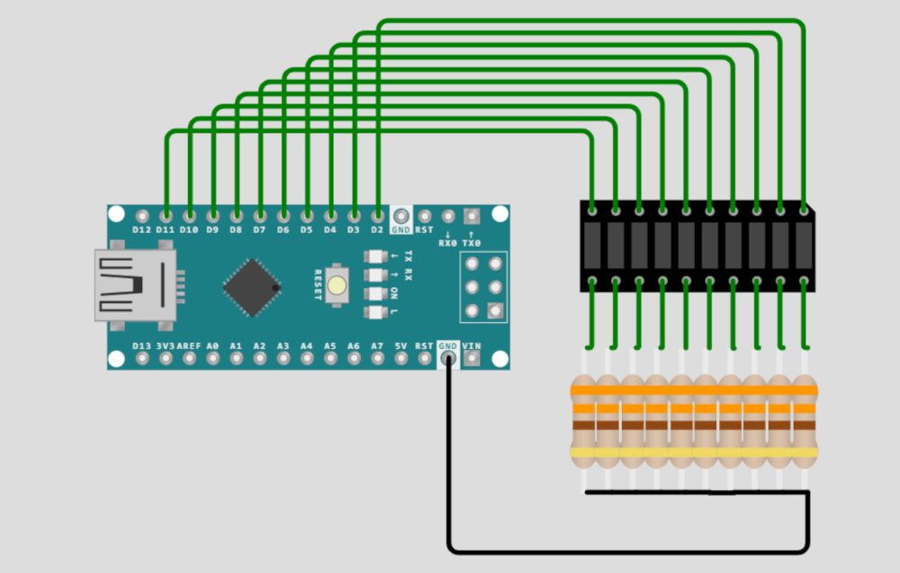
รูป: ผังการต่อวงจรเสมือนจริงสำหรับ Arduino Nano V3
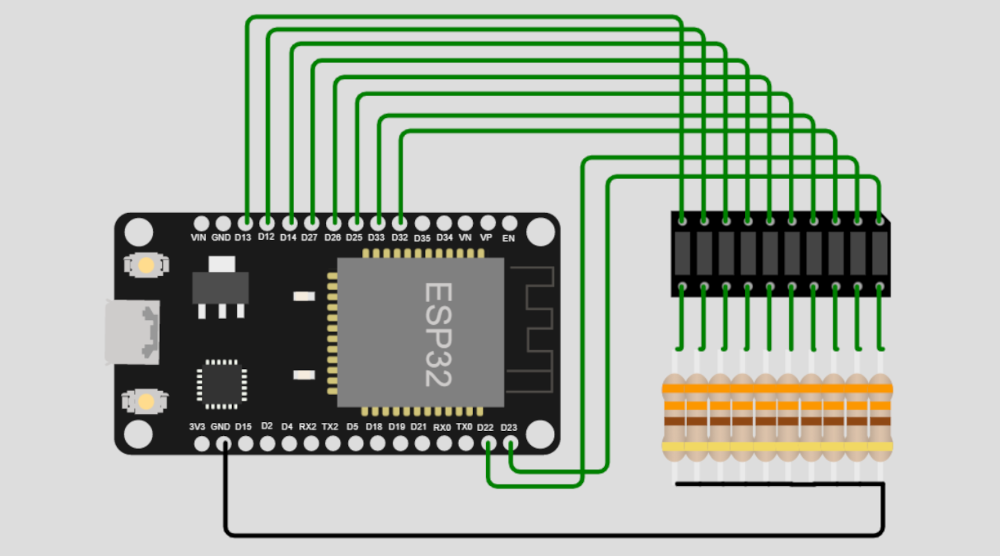
รูป: ผังการต่อวงจรเสมือนจริงสำหรับ ESP32-DevKit-V1
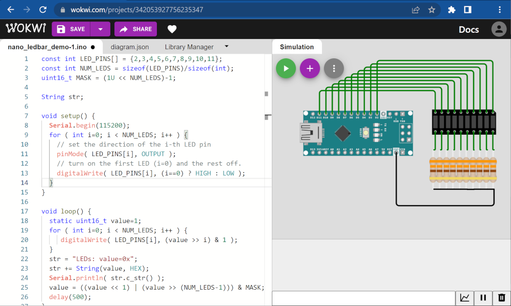
รูป: การเขียนโค้ดและวาดวงจรด้วย WokWi Simulator สำหรับบอร์ด Arduino Nano
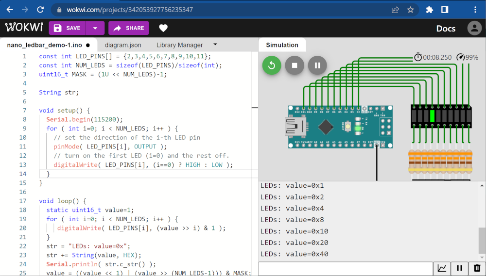
รูป: การรันโค้ดเพื่อทดสอบการทำงานโดยใช้บอร์ด Arduino Nano
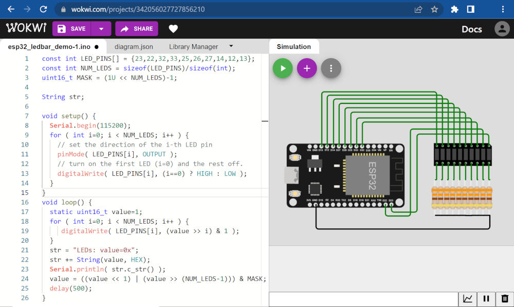
รูป: การเขียนโค้ดและวาดวงจรด้วย WokWi Simulator สำหรับบอร์ด ESP32
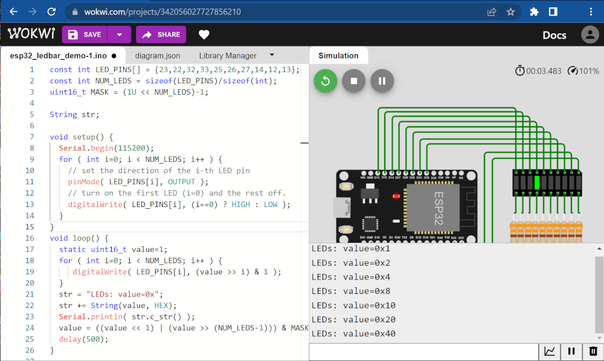
รูป: การรันโค้ดเพื่อทดสอบการทำงานโดยใช้บอร์ด ESP32
▷ การต่อวงจรโดยใช้อุปกรณ์จริง#
ลองมาดูตัวอย่างการต่อวงจร และใช้ซอฟต์แวร์ Arduino IDE เพื่อคอมไพล์โค้ด และอัปโหลด Arduino Sketch ไปยังบอร์ดไมโครคอนโทรลเลอร์
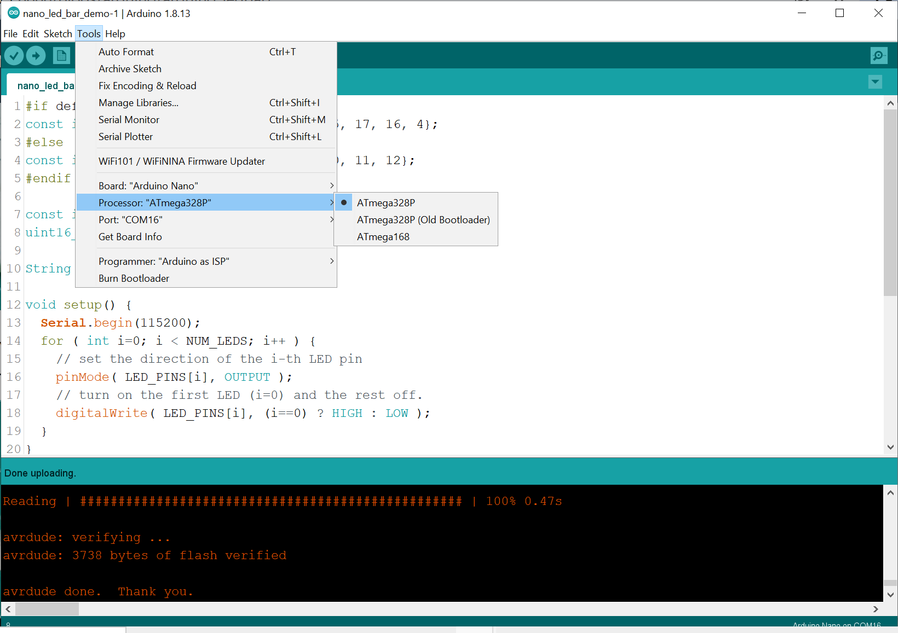
รูป: การคอมไพล์และอัปโหลดโค้ด Arduino Sketch สำหรับบอร์ด Arduino Nano
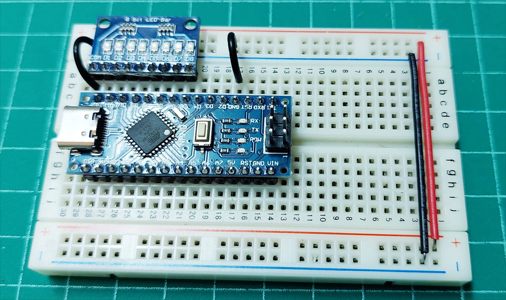
รูป: ตัวอย่างการต่อวงจรโดยใช้บอร์ด Arduino Nano และโมดูล 8-bit LED Bar แบบ COM=GND และเลือกใช้ขา Arduino Pins = {D5, D6, D7, D8, D9, D10, D11, D12}
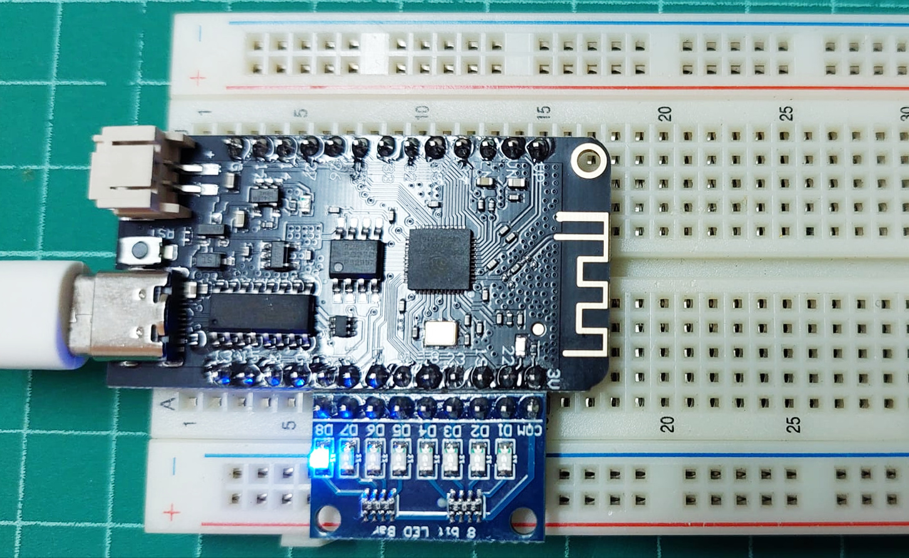
รูป: ตัวอย่างการต่อวงจรโดยใช้บอร์ด WeMos Lolin32 Lite (ใช้แทนบอร์ด ESP32 DevKit V1) และโมดูล 8-bit LED Bar แบบ COM=VCC และเลือกใช้ขา ESP32 GPIO Pins = {22, 19, 23, 18, 5, 17, 16, 4}
▷ การสร้างสัญญาณ PWM สำหรับ ESP32#
ชิป ESP32 มีวงจรภายในที่เรียกว่า LED Control (LEDC) Peripheral สามารถสร้างสัญญาณดิจิทัล-เอาต์พุตตามรูปแบบที่เรียกว่า PWM (Pulse-Width Modulation) ซึ่งเป็นสัญญาณที่มีความถี่คงที่ แต่ปรับความกว้างของพัลส์ที่เป็น HIGH ได้ (เรียกว่า Duty Cycle) และสามารถสร้างสัญญาณได้สูงสุด 16 ช่อง (PWM Channels)
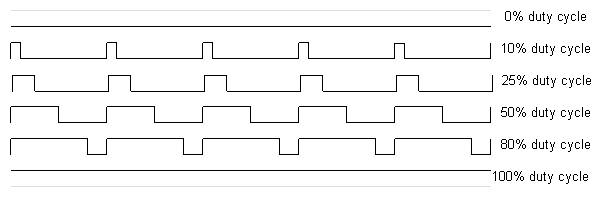
รูป: ตัวอย่างคลื่นสัญญาณ PWM ที่มีค่า Duty Cycle แตกต่างกัน (Source: arduino.cc)
การเขียนโปรแกรมด้วย Arduino-ESP32 ก็มีคำสั่งที่เกี่ยวข้องกับการใช้งาน LEDC ดังนี้
double ledcSetup(uint8_t channel, double freq, uint8_t resolution_bits)เป็นการเริ่มต้นใช้งานวงจร LEDC สำหรับช่องสัญญาณchannelตามที่เลือก (0..15) และตั้งค่าความถี่ให้ใกล้เคียงกับค่าที่ต้องการ (freq) และเลือกความละเอียดของค่า PWM Duty Cycle โดยระบุเป็นจำนวนบิต (resolution_bits) ฟังก์ชันนี้จะให้ค่าความถี่ (หน่วยเป็น Hz) ของสัญญาณ PWM ที่สามารถใช้ได้ แต่ถ้าได้ค่าเป็น 0 แสดงว่าเกิดความผิดพลาดในการตั้งค่าใช้งานvoid ledcWrite(uint8_t channel, uint32_t duty)เป็นการเขียนค่าdutyสำหรับ PWM Duty Cycle ไปยังช่องสัญญาณchannelและค่าจะต้องอยู่ในช่วง , คือ จำนวนบิตสำหรับค่า PWM Resolutionvoid ledcAttachPin(uint8_t pin, uint8_t channel)เป็นการเริ่มต้นใช้งานขาpinซึ่งเป็นหมายเลขขา GPIO ของ ESP32 กับช่องสัญญาณchannelvoid ledcDetachPin(uint8_t pin)เป็นการเลิกใช้งานขาpinสำหรับช่องสัญญาณ PWM Channel
ตัวอย่างโค้ดต่อไปนี้ สาธิตการทำให้ LED แต่ละดวงของโมดูล 8-bit LED Bar (เลือกใช้แบบ Active-Low) ค่อย ๆ สว่างขึ้นแล้วดับลง เรียงไปตามลำดับของ LED โดยใช้สัญญาณ PWM ที่มีค่า Duty Cycle เปลี่ยนแปลงได้ เพื่อปรับความสว่างของ LED มีการตั้งค่าความถี่เท่ากับ 1kHz และค่า PWM Resolution เท่ากับ 8 บิต ดังนั้นจึงใช้ค่า Duty Cycle ในช่วง 0 .. 255
const int LED_PINS[] = {22,19,23,18,5,17,16,4}; // ESP32 pins
const int NUM_LEDS = sizeof(LED_PINS)/sizeof(int);
#define OFF (HIGH) // active-low LED
void setup() {
for ( int i=0; i < NUM_LEDS; i++ ) {
// set the direction of the i-th LED pin
pinMode( LED_PINS[i], OUTPUT );
digitalWrite( LED_PINS[i], OFF );
}
}
const int PWM_RESOLUTION = 8;
const int PWM_FREQ = 1000;
const int DUTY_MAX = (1 << PWM_RESOLUTION);
void loop() {
for ( int i=0; i < NUM_LEDS; i++ ) {
ledcSetup( i /*channel*/, PWM_FREQ, PWM_RESOLUTION );
ledcAttachPin( LED_PINS[i] /*pin*/, i /*channel*/ );
for ( int x=0; x < 2*DUTY_MAX; x++ ) {
int duty = (x >= DUTY_MAX) ? 2*DUTY_MAX-1-x : x;
ledcWrite( i, DUTY_MAX-1-duty );
delay(5);
}
ledcDetachPin( LED_PINS[i] );
digitalWrite( LED_PINS[i], OFF );
delay(200);
}
}
คำแนะนำ: ให้ลองเปลี่ยนมาใช้ LED แทน LED Bar ในกรณีที่ใช้ WokWi Simulator จำลองการทำงาน เพราะจะทำให้เห็นการเปลี่ยนแปลงและสังเกตดูความสว่างของ LED ได้ชัดเจนกว่าขณะที่จำลองการทำงานของวงจร
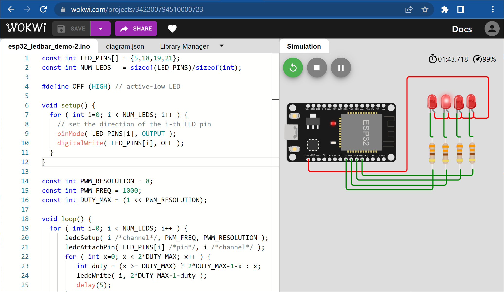
รูป: ตัวอย่างการต่อวงจรสำหรับ WokWi Simulator และเลือกใช้ขาของบอร์ด ESP32 DevKit V1 จำนวน 4 ขา {5, 18, 19, 21} และต่อวงจร LED จำนวน 4 ชุด ให้ทำงานแบบ Active-Low
▷ การสร้างสัญญาณ PWM สำหรับ Arduino Nano#
ในการสร้างสัญญาณ PWM โดยใช้บอร์ด Arduino Uno หรือ Nano
จะต้องเลือกใช้ขาจากหมายเลข {3, 5, 6, 9, 10 ,11} ซึ่งมีเพียง 6 ขา เท่านั้น
(เนื่องจากชิปไมโครคอนโทรลเลอร์ ATmega328P สามารถสร้างสัญญาณ PWM
ด้วยใช้วงจร Timers ภายในชิป ได้เพียง 6 ช่อง) และมีคำสั่ง
analogWrite()
ของ Arduino API ให้ใช้กับขาเหล่านั้น ความถี่ของสัญญาณ PWM ได้ถูกกำหนดไว้แล้ว และมีจำนวนบิตของสัญญาณ PWM เท่ากับ 8 บิต
- 490 Hz: 3, 9, 10, 11 pins
- 980 Hz: 5, 6 pins
โค้ดต่อไปนี้ สาธิตการสร้างสัญญาณ PWM จำนวน 4 ช่องสัญญาณ โดยเลือกใช้งานขาหมายเลข {5, 6, 9, 10} เพื่อนำมาใช้ควบคุมความสว่างของ LED จำนวน 4 ดวง (ต่อวงจรให้ทำงานแบบ Active-High)
const int LED_PINS[] = {5,6,9,10}; // Arduino PWM pins
const int NUM_LEDS = sizeof(LED_PINS)/sizeof(int);
#define OFF (LOW) // active-high LED
void setup() {
for ( int i=0; i < NUM_LEDS; i++ ) {
// set the direction of the i-th LED pin
pinMode( LED_PINS[i], OUTPUT );
digitalWrite( LED_PINS[i], OFF );
}
}
#define DUTY_MAX (256) // 8-bit PWM resolution
void loop() {
for ( int i=0; i < NUM_LEDS; i++ ) {
int pin = LED_PINS[i];
analogWrite( pin, 0 );
for ( int x=0; x < 2*DUTY_MAX; x++ ) {
int duty = (x >= DUTY_MAX) ? 2*DUTY_MAX-1-x : x;
analogWrite( pin, duty );
delay(5);
}
digitalWrite( pin, OFF );
delay(200);
}
}
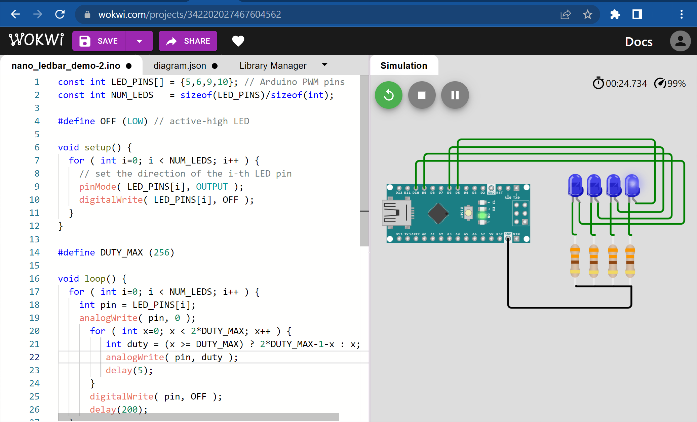
รูป: ตัวอย่างการต่อวงจรและจำลองการทำงานโดยใช้ WokWi Simulator
▷ กล่าวสรุป#
บทความนี้นำเสนอการใช้งานโมดูล 8-bit LED Bar และการเขียนโค้ด Arduino Sketch โดยทดลองใช้กับบอร์ดไมโครคอนโทรลเลอร์ ESP32 และ Arduino Nano และจำลองการทำงานเสมือนจริงด้วย WokWi Simulator
This work is licensed under a Creative Commons Attribution-ShareAlike 4.0 International License.
Created: 2022-09-06 | Last Updated: 2022-11-07